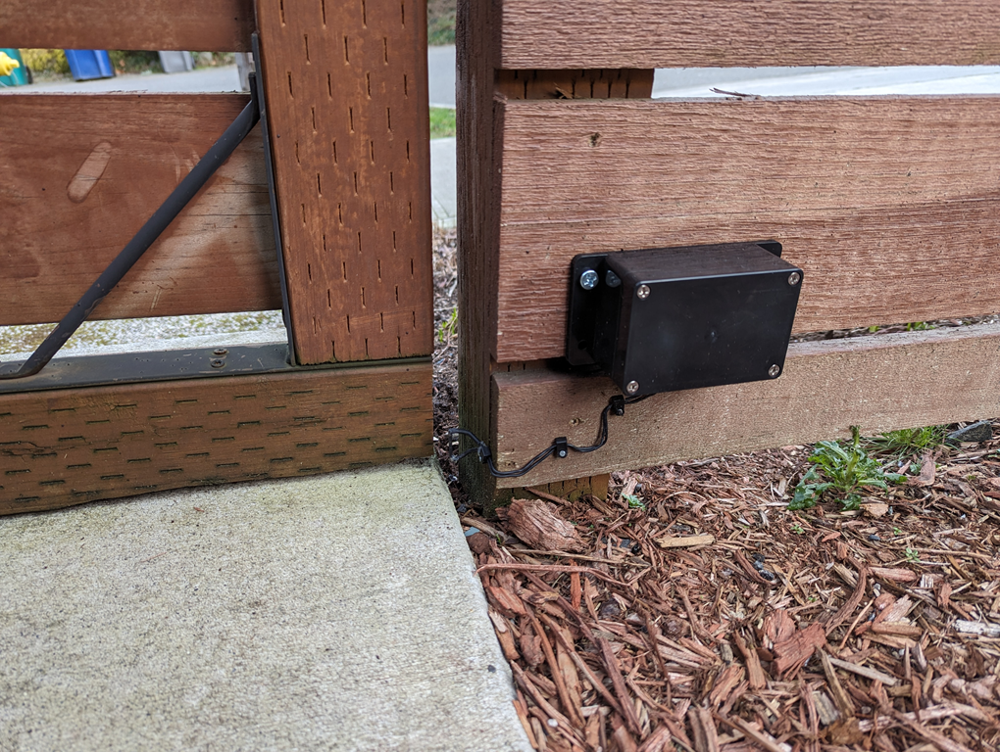

Remote front gate sensor.
I have a couple use cases for detecting when my house front gate is opened. At night, opening the gate triggers the front porch lights. During the day, I know when packages arrive. When I'm away, I get a picture of the front gate from my doorbell camera.
Here are notes on using a battery powered ESP-01s to notify when the house front gate is opened.
Hardware choice
The gate is about 21 feet (~6.5 meters) from the house. That's not too far, but I didn't want to run wires to power a sensor. I decided to use a 3V CR123A lithium battery. I don't live in an area of extreme temperatures, so it was worth a try.
The plan was to have a sensor detect when a magnet attached to the gate door swings past a mechanical reed switch -- pretty simple. I needed a microcontroller (MCU) that can sleep using minimal battery power and be triggered by the reed switch closing. I also needed that MCU to communicate its state wirelessly.
My first choice was a Digi XBee3 Zigbee 3.0 module. I've had good experience with them, such as monitoring my laundry. The XBee3 can sleep at very low power as a Zigbee end device, and has a pin that can wake it up. Unfortunately, I seemed to end up fighting the Zigbee 3.0 spec more than anything. It can be hours or even days before the gate is triggered, and after a certain period the XBee3 would not associate with a nearby Zigbee router or controller.
Not being happy with the XBee3 for this use case, I looked for another wireless solution. Bluetooth Low Energy (BLE) was an option. I use that already with a small battery device on a house key chain that sends a BLE beacon, which I pick up on a Raspberry Pi (Rpi). When I get close to the house and it's detected, the Rpi sends an MQTT message subscribed to by Home Assistant as an automation. The automation turns on the front porch lights at night. That works pretty well as long as I remove the BLE device from my pocket. It's a very low power signal. My concern here is I wanted to use a small weather proof enclosure (lots of rain where I live) and I may not have been able to pick up a BLE beacon.
Ruling out BLE, I took a look at the ESP8266/ESP32 WiFI MCU devices. Specfically, the ESP-01s (ESP8266) looked promising since it's cheap, small, has just enough GPIO pins, and has a very low power deep sleep mode that can wake up via the RST pin. See Espressif's website. The ESP-01s is the replacement for the older ESP-01. This looked promising and because of the ubiquity of these devices, there is plenty of documentation and resources you can find online. Also, the Arduino libraries looked mature enough, so prototyping would be quick and easy (VSCode + Arduino).
Programming
Programming the ESP-01s is straight forward and in short time I had a prototype working. The plan was to have the ESP-01s wake up and quickly connect to WiFi and publish an MQTT message, then immediately go back to deep sleep. As a bonus, I wanted to include the input voltage reading for the ESP-01s in the MQTT payload so I can monitor the battery health of the CR123A.
I used the ESP8266 WiFiClient to connect to WiFi, along with a couple optimizations to conserve battry and publish the MQTT as quickly as possible. First, I use static IPv4 addresses to avoid DHCP.
Next, after digging around online I learned of this cool trick: Persist the WiFi's BSSID and channel in a struct to the RTC non-volite memory. On awake, I can read the struct back and pass in these values as parameters to the WiFi.begin method.
In my testing, these optimizations saved a second or two, which is of course better for battery life. Also, that time is noticeable when walking the distance from the gate to the front door and waiting for the porch light to automatically turn on.
Here's the struct (K&R braces to save space):
typedef struct {
uint32_t crc32;
uint8_t channel;
uint8_t bssid[6];
uint8_t padding;
} TRTCWiFi;
Here's roughly what the connection code looks like:
bool connectStaticWifi(int connect_loops=40) {
IPAddress ip(192, 168, 10, 3);
IPAddress subnet(255, 255, 255, 0);
IPAddress gateway(192, 168, 10, 1);
TRTCWiFi rtcWiFi;
WiFi.persistent(false);
WiFi.config(ip, gateway, subnet);
WiFi.mode(WIFI_STA);
bool rtcValid = readRTCWiFi(&rtcWiFi);
for (int j=0; j < 2; ++j) {
if (rtcValid) {
WiFi.begin(SSID, PWD, rtcWiFi.channel, rtcWiFi.bssid, true);
}
else {
WiFi.begin(SSID, PWD);
}
for (int i=0; i < connect_loops; ++i) {
if (WiFi.status() != WL_CONNECTED) {
delay(250);
Serial.print(".");
continue;
}
}
if (WiFi.status() != WL_CONNECTED) {
if (!rtcValid) {
return false;
}
rtcValid = false;
continue;
}
rtcWiFi.channel = WiFi.channel();
memcpy(rtcWiFi.bssid, WiFi.BSSID(), 6);
rtcWiFi.crc32 = calculateCRC32(((uint8_t*)&rtcWiFi) + 4, sizeof(rtcWiFi) - 4);
ESP.rtcUserMemoryWrite(0, (uint32_t*)&rtcWiFi, sizeof(rtcWiFi));
return true;
}
return false;
}
For the MQTT client code, I use the Arduino PubSubClient library. I don't use a certificate to encrypt. More on that later. Here is the main code that when awake, connects, publishes, then sleeps:
if (connectStaticWifi()) {
uint16_t vcc = ESP.getVcc();
WiFiClient wifiClient;
IPAddress mqttHost(192, 168, 10, 2);
PubSubClient mqttClient(wifiClient, mqttHost, 1883);
if (mqttClient.connect("frontgate_client")) {
mqttClient.publish(String("HA/trigger/") + WiFi.hostname(),
String("{\"event_type\":\"triggered\",\"VCC\":") + vcc + "}");
mqttClient.disconnect();
}
}
ESP.deepSleep(0, RF_NO_CAL);
I add Wifi.hostname() to the topic and include the VCC (input voltage) reading in the payload. To have the ADC read the VCC, you have to configure the ESP-01s using this at the top of the source:
ADC_MODE(ADC_VCC);
We now have everything we need to publish an MQTT message when the front gate reed switch wakes up the ESP-01s.
VLAN and Mosquitto MQTT broker configuration
I already had an obligatory IoT VLAN configured for cloud-crap that came with the house (e.g. Ring doorbell). I've finally replaced all this Iosh*T-ness with Unifi devices (e.g. G4 Doorbell Pro). I still use my IoT VLAN though for projects like the front gate sensor.
VLAN isolation is important since I didn't use TLS for the MQTT connection. I'm really strict about using TLS and ACL settings for the rest of my MQTT clients (e.g. the Rpi that publishes BLE devices) running on my main network. Isolating clients to a VLAN that don't encrypt at least lets me control every client that can see the open port to the IoT Mosquitto broker. I especially don't want it visible from my main networks.
I have a low power Intel Atom dual NIC device that runs FreeBSD 14 and Mosquitto 2.0 MQTT broker. One NIC is on the IoT VLAN and the other NIC can access the network I run my main Mosquitto broker. Everything is locked down with PF rules.
I bridge the two Mosquitto brokers. For the IoT NIC listener, I use an ACL file to limit topics. There is a single line in the mosquitto.acl file:
topic write HA/trigger/ESP-xxxxxx
ESP-xxxxxx in the topic is replaced with the unique hostname for my specific ESP-01s -- we saw that code in the ESP-01s. This locks down what can be published to the IoT Mosquitto broker.
Here are the important mosquitto.conf lines for the IoT Mosquitto broker:
listener 1883 192.168.10.2
allow_anonymous true
acl_file /usr/local/etc/mosquitto/mosquitto.acl
connection_messages true
log_type error
log_type warning
log_type notice
log_timestamp true
log_timestamp_format %Y-%m-%dT%H:%M:%S
log_dest syslog
connection main_broker
address my.main.mosquitto.broker:8883
bridge_insecure false
bridge_capath /etc/ssl/certs/
remote_username iotbridge
remote_password ***
remote_clientid iot_mosquitto.service
cleansession false
topic HA/trigger/# out
This configures a listener on the IoT VLAN and creates a bridge to my main Mosquitto broker. Note that I use TLS for that bridge connection. Home Assistant can also subscribe to my main Mosquitto broker.
I can now get an MQTT message published from the front gate ESP-01s to MQTT clients on my main Mosquitto broker.
Home Assistant integration
To create Home Assistant automations that respond to the front gate opening, I created an MQTT Event. Something like this in configuration.yaml:
mqtt: !include mqtt.yaml
And mqtt.yaml:
event: !include mqtt_event.yaml
device_tracker: !include mqtt_device_tracker.yaml
And finally, mqtt_event.yaml:
- name: "Front gate"
unique_id: mqtt_event.front_gate_trigger
state_topic: "HA/trigger/ESP-xxxxxx"
event_types:
- "triggered"
Note the device_tracker in mqtt.yaml. I use unifi_tracker for home presence detection in Home Assistant. Generally, no household members leave the house without their phone, so I use my Unifi APs to keep track of active phone connections to determine if anyone is home.
When nobody is home, I take a snapshot from my Unifi G4 Doorbell Pro and send it to my phone using signal-cli-rest-api. Usually this is a picture of a package being delivered.
Deployment
Wiring up the ESP-01s to be triggered on the RST pin to wake from deep sleep is really straight forward -- plenty of resources online. I used a socket to make the soldering easy and in case I needed to replace the ESP-01s. Also, I use a battery holder for the CR123A to make battery replacement easy.
I found a small enclosure with an IP65 waterproof rating to house the ESP-01s and the CR123A battery. I sealed up all holes for sensor wires with silicone gel, and added a couple desiccant packets for good measure.
For the gate magnet, it's a neodymium and about 1cm in diameter. I created an indentation in the wooden gate and use silicone gel as an adhesive. The magnet passes just over the reed switch a short distance from the position when the gate is latched.
Remaining RTC code.
Here is the remaining ESP-01s code to read from RTC memory.
// From https://gist.github.com/nazt/e401aa099c81f7b0b26bb89acfa916f2
uint32_t calculateCRC32(const uint8_t *data, size_t length) {
uint32_t crc = 0xffffffff;
while (length--) {
uint8_t c = *data++;
for (uint32_t i = 0x80; i > 0; i >>= 1) {
bool bit = crc & 0x80000000;
if (c & i) {
bit = !bit;
}
crc <<= 1;
if (bit) {
crc ^= 0x04c11db7;
}
}
}
return crc;
}
bool readRTCWiFi(TRTCWiFi * pRTCWiFi) {
bool rtcValid = false;
if (ESP.rtcUserMemoryRead(0, (uint32_t*)pRTCWiFi, sizeof(TRTCWiFi))) {
uint32_t crc = calculateCRC32(((uint8_t*)pRTCWiFi) + 4, sizeof(TRTCWiFi) - 4);
if (crc == pRTCWiFi->crc32) {
rtcValid = true;
}
}
return rtcValid;
}
Summary
I now have a suprisingly reliable way to detect when my house front gate is opened. What also surpised me is the battery has been healthy and I have not had to replace it. I installed it in September 2023 and the VCC is still reading around 3.1 VDC.
If I open and close the gate slowly enough, I'll get two trigger events. It's fine, I just account for that in any automation.
One drawback is I can't reliably detect if the gate is not latched. I find out soon enough though if it's windy.
I chose DIY here, but another option I considered was using a Ring Z-Wave sensor: Ring Alarm Outdoor Contact Sensor. Z-Wave has the range and I already have a healthy mesh network. A bit pricy and not as fun though.
Here is the deployment of the front gate sensor in all it's glory, spouse approved. 